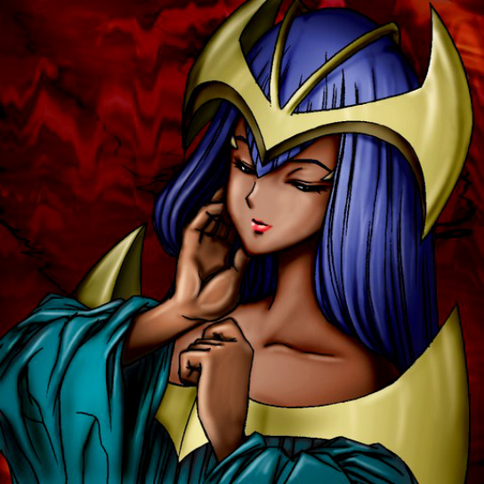

Dark Elf

Description: "For every battle engaged with the enemy, the LP of the player controlling Dark Elf is reduced by 50 points."
STATS
ATK: 2000
DEF: 800DECK COST
Deck Cost per Card: 33EFFECT IS IMPLEMENTED!
Fusion List (6 Possible Fusions)
- Dark Elf + Ancient Jar = Mystical Sand
- Dark Elf + Morphing Jar = Mystical Sand
- Dark Elf + Muka Muka = Mystical Sand
- Dark Elf + Mystical Elf = Dark Witch
- Dark Elf + Stone Armadiller = Mystical Sand
- Dark Elf + Stone Ghost = Mystical Sand